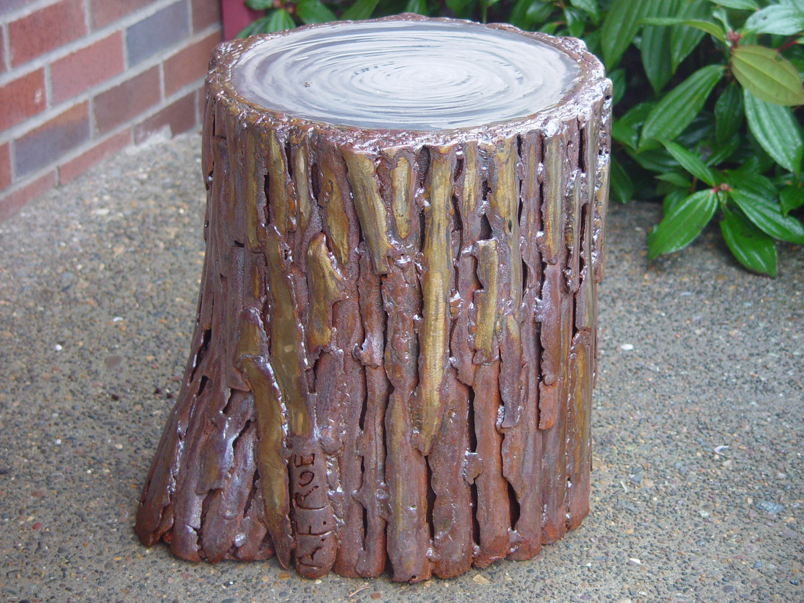

Stump Stool
Mild steel · 18″ × 18.5″ × 32.5″ · 2009

My parents grew up in the pan handle of West Texas during the dust bowl. This led them to love the forests of the Pacific Northwest where we eventually landed as a family. This passion for the green lushness of the Douglas fir and cedar trees of the surrounding woods was instilled in me. Trees have an individuality that fascinates; their size, form and texture are a spectacular example of basic elements of design. This stump was a practical reference to trees and one that provided seating around a fire that would not burn! It was constructed of repeated small plasma-cut pieces of pipe tacked and welded onto a larger pipe as a surface decoration. The stainless seating surface insured a clean surface on which to sit and humorously acts as a rain drum in a heavy downpour!